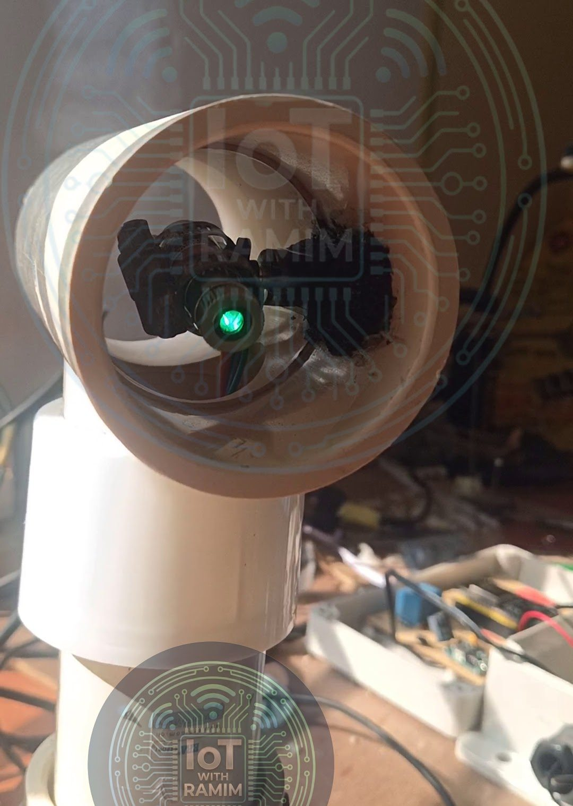
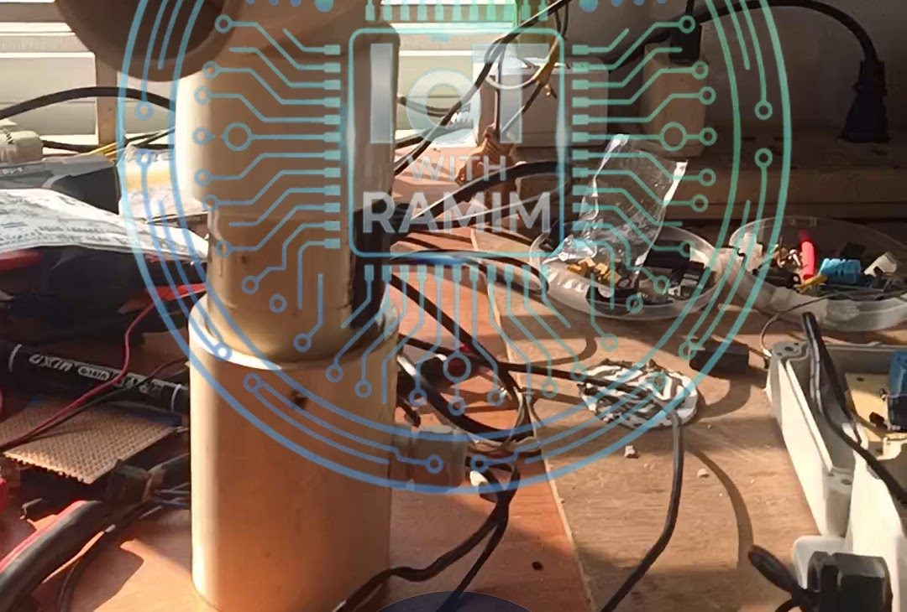

Aquaculture
NFN Laser Repellent (LR)
A non-lethal, automated security system that protects open-air fish farms from predatory birds such as cormorants and herons. A 520 nm green laser on a dual-axis pan-tilt mount exploits birds' fear of moving green light to create a "no-fly zone" over the water without harming wildlife.
- Client
- Nexus Fish Network (NFN)
- Role
- Lead R&D Engineer (IoT & Hardware)
- Type
- Automated predator deterrent
- Status
- v1.0 standard edition; v2.0 AI-vision prototype in field testing
- ESP32
- Servo pan-tilt (v1)
- Stepper motors (v2)
- 520 nm green laser
- MQTT
- RTSP
- YOLOv8
- DHT22
Overview
Netting and other traditional protection methods are expensive and often impractical on large water bodies. The NFN Laser Repellent takes a different approach: it uses the biological fear reflex birds have towards moving green light beams. By simulating a physical threat across the water surface, it keeps predators away without causing them harm.
The LR unit is the third device family in the Smart Aquaculture Ecosystem, alongside the NFN-SEN sensor and NFN-SW switching units.
LR v1.0: the automated sweeper (standard edition)
The foundational version, designed for broad-area coverage using algorithmic patterns.
Mechanism
- Dual-axis control: two precision servo motors, one for the X axis and one for the Y axis, form a pan-tilt mount with 180° of travel.
- Optics: a high-power 520 nm green laser. Green was chosen for its high visibility in daylight and its effectiveness at startling avian pests.
Operational logic
- Randomised sweeping: so that birds do not get used to the patterns, the ESP32 firmware runs randomised sweeping algorithms. The laser crosses the pond surface on unpredictable paths for constant deterrence.
- Schedule-based activation: through the MQTT API the system can be scheduled to run only during peak predation hours (dawn and dusk), saving energy.


LR v2.0: the AI-vision hunter (advanced prototype)
Currently in active field testing, v2.0 gives the system sight, turning it from a passive deterrent into an active defender. Where v1.0 sweeps blindly, v2.0 adds real-time video analysis, and its pan-tilt mechanism is driven by stepper motors instead of servos.
System workflow
- Visual input: the system connects to an on-site CCTV/IP camera over RTSP (Real-Time Streaming Protocol).
- AI detection: a computer-vision model (for example YOLOv8) running on a local edge server processes the live stream. It is trained to recognise specific predator classes such as "bird" and "heron".
- Target acquisition: when a predator is detected, the system calculates its coordinates relative to the laser's position.
- Active repulsion: the system overrides the idle sweeping pattern and drives the stepper motors to point the laser directly at or near the target, which greatly increases the scare factor.
Shared hardware
Both versions share a robust, field-ready hardware architecture:
- Microcontroller: ESP32 handling motor control (servos on v1.0, steppers on v2.0) and MQTT communication.
- Flexible power: solar mode on the standard 12 V NFN solar system for off-grid sites, or grid mode through an AC-to-DC adapter where electricity is available.
- Internal telemetry: as on the SEN and SW units, a DHT22 on the PCB monitors enclosure temperature so the laser module does not overheat during long operation.
- Connectivity: fully integrated into the Nexus Fish Network over MQTT, so users can aim the laser manually or disable it from the mobile app during farm maintenance.
Versions at a glance
| LR v1.0 | LR v2.0 | |
|---|---|---|
| Status | Standard edition | Advanced prototype, in field testing |
| Pan-tilt drive | Two servo motors (X/Y) | Stepper motors |
| Targeting | Randomised sweeping algorithms, scheduled via MQTT | RTSP camera feed analysed by a computer-vision model (e.g. YOLOv8) on an edge server; aims at detected birds |
| Laser | High-power 520 nm green | |